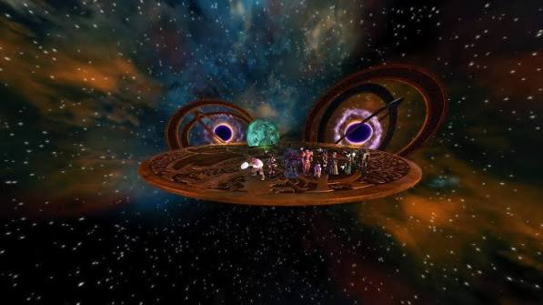

TRIAL MECHANICS
TOWER OF THE MAD MAGE
Fire. Ice. Lightning. Arcane nonsense. Halaster chose violence.

OVERVIEW
HALASTER
Tower of the Mad Mage revolves around four main mechanic sets: Arcane, Cold, Fire and Lightning.
The fight becomes progressively harder as Halaster begins combining elements together. Recognising the visual tells and knowing when to spread, stack, hide or move is essential.
ARCANE MECHANICS
ANNIHILATE
- Halaster raises a large blue orb before the attack.
- The current target and nearby players take heavy damage.
- Do not stand beside the tank when Annihilate resolves.
- The attack applies Imminent Annihilation stacks, increasing damage from future Arcane attacks.
- Tanks should swap after roughly two stacks.
ARCANE MECHANIC
DISINTEGRATION WAVE
- Halaster leaves the arena and appears above the platform.
- His raised hand indicates which half of the arena will be hit.
- Move quickly into the safe half.
- Later in the fight, two waves can occur at once.
- After Disintegration Wave, prepare immediately for Death from Above.
COLD MECHANICS
CREEPING ICE
- Sections of the platform become covered in ice.
- Players standing on the ice lose control of their movement and cannot use abilities.
- Stay away from icy sections whenever possible.
- Be especially careful during knockback mechanics, as being pushed onto the ice can send you off the platform.
KNOCKBACK
DOWNBURST
- A large burst forms in the centre of the arena.
- After a short delay, everyone is pushed away from the centre.
- Position close to the centre before the push so you have maximum space behind you.
- Do not jump during Downburst, as being airborne increases the distance you are thrown.
SHARED DAMAGE
HYPOTHERMIA
- A marked player receives heavy incoming damage.
- Group around the marked player to split the hit.
- Double Hypothermia creates two simultaneous markers.
- Split into two separate groups.
- Never overlap the two stack groups, as overlapping damage is lethal.
COLD MECHANIC
PERMAFROST & WHITEOUT
- Players marked with blue ribbons become frozen in Permafrost.
- Do not immediately destroy the ice.
- Whiteout follows and deals lethal group-wide damage.
- Hide behind the Permafrost to survive Whiteout.
- Once Whiteout resolves, destroy the ice quickly.
- Players left trapped too long permanently die.
FIRE MECHANICS
ERUPTION
- Eruptions follow a targeted DPS player.
- Keep moving while the mechanic is active.
- Each eruption appears beneath the player shortly before exploding.
- Move away from the group so repeated eruptions do not cover safe space.
FIRE MECHANIC
FIREBOMB
- Firebomb must be deliberately soaked.
- If nobody takes the bomb, it explodes across the arena and leaves severe group-wide damage over time.
- A tank or heavily mitigated player should take it.
- Everyone else stays clear.
FIRE MECHANIC
FIRE BURST
- Red floor patterns appear before Fire Burst detonates.
- Move into the safe sections of the pattern.
- Patterns can appear as rings, squares, crosses or rotated crosses later in the fight.
HEAL CHECK
HEATWAVE
- Heatwave causes unavoidable group-wide damage over time.
- Healers should prepare sustained group healing.
- Defensive mitigation should be used if available.
FLOOR HAZARD
LAVA RING
- The outer ring of the platform begins glowing red.
- Move inward before the lava appears.
- The outer section remains extremely dangerous while the lava is active.
PAIR MECHANIC
SEARING CHAINS
- Two players become chained together.
- Move away from each other to break the chain.
- Remaining chained causes continuous damage.
- Multiple chains can exist simultaneously, so coordinate movement carefully.
LIGHTNING MECHANICS
POLARITY CHARGES
- Players are paired and receive either a plus or minus symbol.
- Matching charges push players apart.
- Opposite charges pull players together.
- Position so the push or pull does not send you off the platform.
- Avoid colliding during opposite-charge pulls.
- A collision applies a severe long-lasting damage reduction.
- Do not jump during the mechanic, as this increases knockback distance.
LIGHTNING MECHANIC
GROUND TO CLOUD
- A purple electrical flash signals the mechanic.
- Move immediately away from your current position.
- The first hit lands where players were standing.
- A second personal AoE follows shortly afterward.
- Spread out so the second hits do not overlap.
GROUP DAMAGE
SUPER STORM
- Super Storm deals massive unavoidable damage to the entire group.
- Prepare mitigation and group healing before it lands.
FLOOR HAZARD
ELECTRIFIED FLOOR
- Sections of the arena become electrified.
- Move to the safe sections immediately.
- Later in the fight the pattern can invert, making the outer edge the safe zone.
- Watch the floor closely during Disintegration Wave, as both mechanics can overlap.
POSITIONING
DEATH FROM ABOVE
- Halaster lands in the centre of the arena.
- Damage is strongest near the centre.
- Move toward the outer edge before he lands.
- This mechanic regularly follows Disintegration Wave.
PHASE ONE
SINGLE ELEMENTS
- At around 80%, 60% and 40% health, Halaster cycles through Fire, Cold and Lightning.
- Each element is used once before the next phase begins.
- Arcane attacks continue between elemental mechanics.
- Tanks must continue tracking Annihilate stacks and swapping when required.
PHASE TWO
PROTECTIVE BUBBLE
- At roughly 20% health, most of the arena becomes engulfed in fire.
- Move onto the small protected platform in the centre.
- Halaster becomes enormous and attacks the protective bubble.
- Damage his hands before the timer expires.
- Failing the damage check wipes the group.
PHASE THREE
ELEMENT COMBINATIONS
- Phase Three begins with Death from Above.
- Halaster first cycles through single elements again.
- He then begins combining two elements at once.
- At lower health he combines all three.
- Watch the coloured orbs around the platform to identify which elements are active.
- Multiple mechanics can now overlap, so positioning becomes more important than raw damage.
HYBRID PHASES
TWO ELEMENTS AT ONCE
- Lightning + Cold can combine Electrified Floor, Whiteout, Hypothermia, Downburst and Charges.
- Fire + Lightning can combine Lava Ring, Fire Burst, Charges, Ground to Cloud and Firebomb.
- Fire + Cold can combine Whiteout, Lava Ring, Chains, Downburst, Eruption and Fire Burst.
- Prioritise mechanics that require fixed positioning first, then adjust for movement mechanics around them.
ALL ELEMENTS
ABSOLUTE CHAOS
- At around 25% health, Halaster begins combining all three elemental sets.
- Expect repeated Disintegration Waves alongside Fire, Ice and Lightning mechanics.
- Double Firebomb can occur alongside Double Hypothermia and Downburst.
- Chains can overlap with Hypothermia.
- Charges, Fire Bursts and Ground to Cloud can occur in quick succession.
- After each Disintegration Wave, continue rotating consistently around the arena rather than scattering randomly.
FINAL PHASE
SUNFALL
- At approximately 10% health, Halaster begins his final sequence.
- Several mechanics occur in rapid succession, including Disintegration Wave, Downburst, Ground to Cloud, Hypothermia and Eruption.
- Sunfall then begins.
- Sunfall deals increasing group-wide damage over time.
- The damage continues increasing until the group can no longer survive it.
- This is the final damage check.
- Burn Halaster immediately and finish the fight before Sunfall reaches its lethal end.
IMPORTANT
DON'T OVER-PHASE
- More damage is not always better.
- Forcing Halaster into the next phase while an existing mechanic is still active can create impossible or extremely dangerous combinations.
- Stop damage briefly when necessary and allow mechanics to finish before crossing important health thresholds.
- Never force the final phase while the arena is compromised by mechanics that prevent safe positioning.
QUICK REFERENCE
MAD MAGE SURVIVAL NOTES
- Annihilate stacks → tank swap.
- Disintegration Wave → move to safe half.
- Whiteout → hide behind Permafrost.
- Whiteout finished → break frozen players out.
- Hypothermia → stack.
- Double Hypothermia → two separate stacks.
- Downburst → get near centre and DO NOT jump.
- Firebomb → designated player soaks.
- Chains → move apart.
- Same charges → pushed apart.
- Opposite charges → pulled together.
- Ground to Cloud → move, then spread.
- Death from Above → move to outer edge.
- Phase Two → kill the hands before the bubble breaks.
- Final phase → burn Halaster before Sunfall kills everyone.